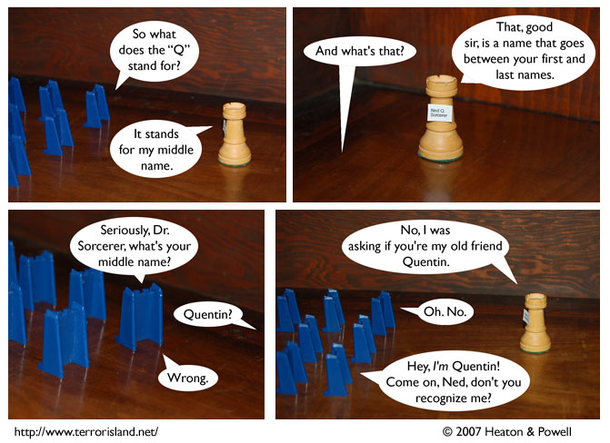

Strip #135
— Monday, April 23, 2007
This is probably a lot more interesting than if Ned were giving the presentation
Notes, Thoughts, &c.
Ben’s Notes
I went to APE this weekend, which was a lot of fun. Instead of writing a detailed con report, here’s a list of names:
People like having their names listed, right?Lewis’s Notes
You guys owe me one, because Ben’s idea for today’s strip was, “What if Stephen just buys some groceries?” I obviously said no. He came back with, “What if Sid just buys some groceries?” I have to admit that I was tempted, but ultimately, I remembered that there are no grocery stores on the moon. Man, what a continuity nightmare that would have been.